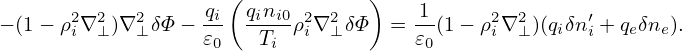
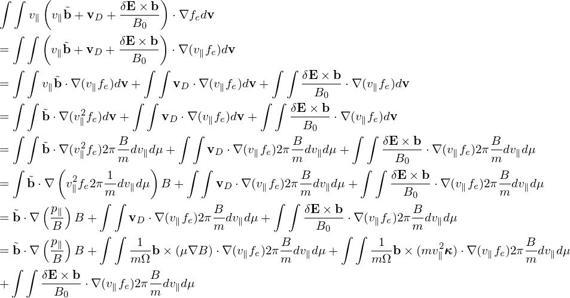

C Transform gyrokinetic equation from (X,μ,𝜀,α) to (X,μ,v∥,α) coordinates
The gyrokinetic equation given above is written in terms of variables (X,μ,𝜀,α), where α
is the gyro-phase. Next, we transform it into coordinates (X′,μ′,v∥,α′) which is defined
by
Use this definition and the chain rule, the gradient operators in (X,μ,𝜀,α) variables are written, in
terms of (X′,μ′,v∥,α′) variables, as
and

Then, in terms of independent variable (X′,μ′,v∥,α′), equation (142) is written where δVD and ⟨δL⟩α involve the gyro-averaging operator ⟨…⟩α. The gyro-averaging operator in
(X′,μ′,v∥,α′) coordinates is similar to that in the old coordinates since the perpendicular velocity
variable μ is identical between the two coordinate systems. Also note that the perturbed guiding-center
velocity δVD is given by
where ∂∕∂X (rather than ∂∕∂X′) is used. Since δϕ(x) = δϕg(X,μ′,α′), which is independent of v∥,
then Eq. (285) indicates that ∂δϕ∕∂X = ∂δϕ∕∂X′.
Dropping terms of order higher than O(λ2), equation (287) is written as

Similarly, in terms of independent variable (X′,μ′,v∥,α′), equation (147) is written as
The guiding-center velocity in the macroscopic (equilibrium) field is given by
 | (291) |
where
 | (292) |
Using B∥0⋆ ≈ B0, then expression (291) is written as
where the curvature drift, ∇B drift, and E0 × B0 drift can be identified. Note that the perturbed
guiding-center velocity δVD is given by (refer to Sec. D.3)
Using the above results, equation (290) is written as
Collecting coefficients before ∂F0∕∂v∥, we find that the two terms involving ∇B0 (terms in blue and
red) cancel each other, yielding This equation agrees with Eq. (8) in I. Holod’s 2009 pop paper (gyro-averaging is wrongly
omitted in that paper) and W. Deng’s 2011 NF paper. Equation (297) drops all terms higher
than O(λ2) and as a result the coefficient before ∂δf∕∂v∥ contains only the mirror force,
i.e.,
 | (298) |
which is independent of any perturbations.
![[ ∂ -∂-] ∂δf-
∂t + (v∥e∥ + VD + δVD )⋅ ∂X′ δf − e∥ ⋅μ∇B0 ∂v ∥
( ) ( )
= − δVD ⋅ ∂F0′ + δVD ⋅ -μ∇B0 ∂F0-
[ ∂X ( v∥ ∂v∥ ) ]
-q ∂⟨v-⋅δA⟩α ⟨δB-⊥⟩α ∂F0-1-
−m − ∂t − v∥e∥ + VD + v∥ B0 ⋅∇X ⟨δϕ ⟩α ∂v∥ v∥, (290)](nonlinear_gyrokinetic_equation322x.png)
![[ ]
∂-+ (v e + V + δV )⋅ -∂--δf − e ⋅μ∇B ∂δf-
∂t ∥ ∥ D D ∂X′ ∥ 0∂v ∥
( ∂F0 ) ( e∥ × ∇X ⟨δϕ⟩α ⟨δB ⊥⟩α) ( μ ∂F0 )
= − δVD ⋅ ∂X-′ + -----B------+ v∥--B---- ⋅ v-∇B0 -∂v-
[ ( 02 0 ∥ ∥ ) ]
-q ∂⟨v-⋅δA⟩α v∥ -μ-- -1- ⟨δB-⊥⟩α ∂F0-1
−m − ∂t − v∥e∥ + Ω ∇ ×b + ΩB0 B0 × ∇B0 + B20E0 × B0 + v∥ B0 ⋅∇X ⟨δϕ⟩α ∂v(∥2v9∥6,)](nonlinear_gyrokinetic_equation328x.png)
![[ ]
∂-+ (v e + V + δV )⋅ -∂--δf − e ⋅μ∇B ∂δf-
∂t ∥ ∥ D D ∂X′ ∥ 0∂v ∥
( ∂F0 )
= − δVD ⋅ ∂X-′
[ ( 2 ) ]
+-q m-v ⟨δB-⊥⟩α-⋅(μ ∇B ) + ∂⟨v⋅δA-⟩α+ vb + v∥∇ × b + -1-E × B + v ⟨δB⊥-⟩α- ⋅∇ ⟨δϕ⟩ ∂F0(219,7)
m q ∥ B0 0 ∂t ∥ Ω B20 0 0 ∥ B0 X α ∂v∥v∥](nonlinear_gyrokinetic_equation329x.png)